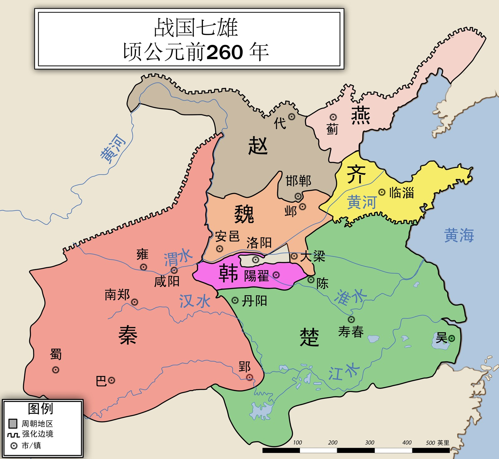

记得勾选「打印背景图形」
地图 · 国家在哪里，为什么重要
这本书里，地理位置几乎决定了每一步 —— 秦国为什么被看不起、为什么没人管得住它、为什么先打韩国最后打齐国。
一、秦国在哪里 —— 从第一章开始用
第一章讲的是嬴政出生之前五百多年的秦国。那时候还没有「战国七雄」， 要弄懂的只有一件事：秦国夹在哪两样东西之间。
犬戎凶猛的塞外民族
常来打秦国
常来打秦国
秦最西边
放牧为生
放牧为生
崤山
周王室 · 中原诸国（齐 晋 宋 楚…）种田为生、文化富庶 —— 看不起秦国，说它「非我族类」
⚠ 这是关系示意图，不是真实地图：方向（秦在西、中原在东）是对的，形状和距离不是。
💡 这张图解释了第一章最关键的一件事
- 坏处：秦国离得远、又放牧，中原大国看不起它 —— 书上原话是「一点文明都没有，简直就是『非我族类』」（第 3 页）
- 好处：东边的崤山是一道天然屏障，「不仅阻隔中原诸国的进犯，同时也为秦国带来一层神秘的色彩」（第 21 页）
- 最关键：因为被瞧不起，「没能真正地了解秦国，这就给了秦国自由发展的空间」（第 21 页）
想一想：被人看不起，居然反而成了秦国的好处 —— 这怎么可能？
🔎 想看真实地图？这两张正好对应第一章第三节
第一章第三节（第 11–21 页）讲的是商鞅变法 → 张仪连横 → 范雎远交近攻，
横跨一百多年。这两张图是那段时间的前后两个时点：
- 战国形势图（前 350 年） —— 商鞅变法前后（书第 12 页）。看这时候秦国还不算大。
- 战国形势图（前 280 年） —— 秦昭襄王、范雎的时候（书第 17 页）。和前 350 年对比，秦国明显变大了 —— 这就是变法和连横的结果。
- 维基百科「战国七雄」 —— 想查某一个国家的详细情况


⚠ 这两张是繁体字，而且标了很多小国（宋、鲁、卫、中山、越、巴、蜀…）和上百个城邑， 比本页第二张难得多。看不懂没关系，只要比一比秦国哪张更大就够了。
二、战国七雄形势图 —— 第三章起最常用，全书都能查
这张图画的是约公元前 260 年，也就是嬴政出生前一年左右 —— 正好是第三章「灭六国」开打之前的样子。读别的章也可以随时翻回来查： 第一章想知道秦国在哪、第二章想知道邯郸在哪、第六章想知道会稽和沙丘在哪，都看这一张。
💡 看图先找这五样东西
- 找到秦（左边粉红那块）。它在最西边，而且面积最大 —— 书上说「地处偏远，占地却相当辽阔」（第 21 页）
- 找到秦国的都城咸阳，和旁边的渭水 —— 非子替天子养马的秦州就在这一带（第 2 页）
- 找到邯郸（赵国境内）—— 嬴政就出生在这里，他和母亲在这座城里受尽欺侮（第 34 页）
- 找到韩（中间那块紫色的小国）。它最小、又紧挨着秦国 —— 所以是第一个被灭的
- 找到齐（右边黄色）。它在最东边，隔着好几个国家 —— 所以是最后一个被灭的

地图作者 Philg88，授权 CC BY 3.0， 取自 Wikimedia Commons。 本页只缩小了尺寸，没有改动内容。

⚠ 原图标题印成「顷公元前260年」，应是「约公元前 260 年」 —— 原作者的笔误，我们没有改图。
三、灭六国的顺序 —— 为什么是这个次序
对着上面那张图看这一行，就会发现顺序不是随便来的。
第 1 个
韩
前 230
最小·紧挨秦
第 2 个
赵
前 228
挨着秦
第 3 个
魏
前 225
挨着秦
第 4 个
楚
前 223
南方最大
第 5 个
燕
前 222
北方最远
第 6 个
齐
前 221
东方最远
💡 三个能从图上看出来的规律
- 由近及远。前三个（韩赵魏）都紧挨着秦国，最后两个（燕齐）离得最远。 这就是范雎向秦昭襄王献的「远交近攻」（第 17 页） —— 先打挨着自己的，远的先交朋友，别让他们联手。
- 韩赵魏合称「三晋」，都是从晋国分出来的（第 11 页）。 看图就明白为什么它们挤在一起。
- 齐国最后被灭，靠的不是打。第三章第三节标题是「燕荆轲刺秦，齐后胜通秦」 —— 齐国的相国后胜暗中帮秦国，齐国就这样没了。
记顺序的口诀：韩赵魏楚燕齐。前三个是三晋，然后南边的楚，最后最远的燕和齐。
关于这一页：第二张是现成的历史地图（署名见图下），
第一、三两张是示意图 —— 只画书里反复提到的几件事，方向对、形状和距离不对，
不能当真实地图看。
为什么值得看地图：这本书里好几件事只有看了位置才想得通 ——
秦国为什么被看不起、为什么能自由发展、灭六国为什么是这个顺序、
为什么「远交近攻」比「合纵连横」更管用。